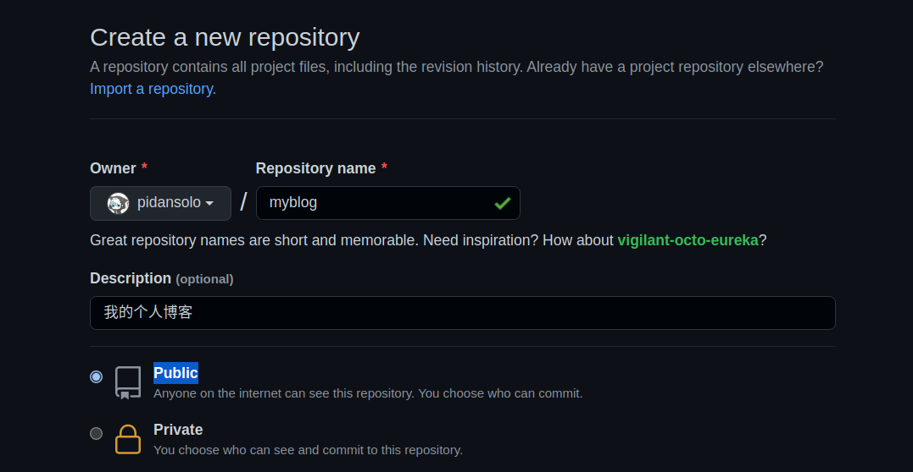
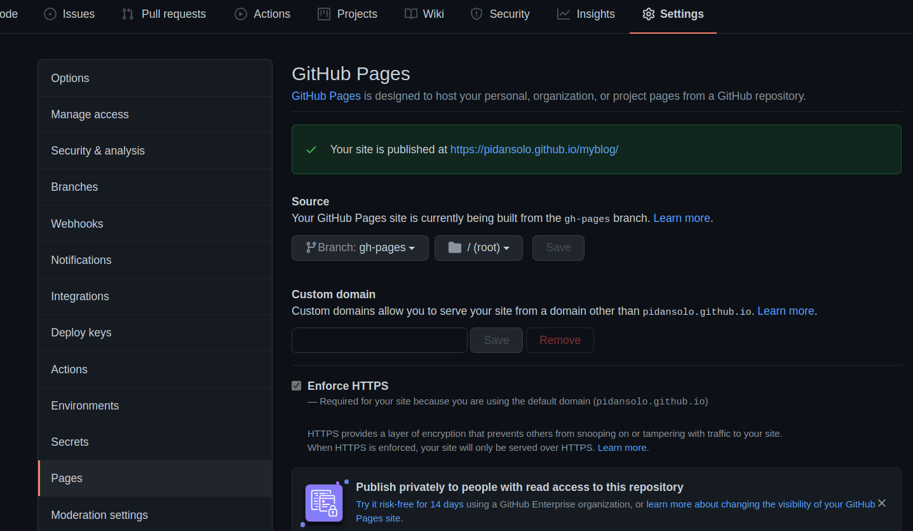

博客管理
本文记录个人博客的搭建方法
| 版本号 | 作者 | 修改时间 | 修改说明 |
|---|---|---|---|
| v1.0 | Joey zhang 925639790@qq.com | 2021-11-25 | 初始版本 |
简介
本人工作快3年了，从最开始的用笔和纸记录，到用 vim 打开 txt 文件记录，再到使用 typora 创建本地 markdown 文件记录。记录的方法一直在更新，但一直局限于本地。虽然平时记录的非常杂乱，但我还是想将我的积累分享到网上，也给自己一个更方便的查看方式。同时暗示自己不再是写给自己看了，后续需要写的更加规范，条理更加需要清晰。
本文介绍的是基于 mkdocs 并参考其他人的博客完成搭建。(在资料中有引用的记录)
环境搭建
mkdocs基础环境搭建
1、安装工具
sudo pip3 install mkdocs mkdocs-material
2、初始化项目
zy@zy:myblog$ mkdocs new my_project
INFO - Creating project directory: my_project
INFO - Writing config file: my_project/mkdocs.yml
INFO - Writing initial docs: my_project/docs/index.md
3、启动服务，执行后浏览器输入 http://127.0.0.1:8000/ 即可看到本地博客内容。
zy@zy:myblog$ cd my_project/
zy@zy:my_project$ mkdocs serve
mkdoc高级功能
mkdocs.yml 文件是页面配置文件
1、添加页面和导航条，官网文档
修改 mkdocs.yml 文件
site_name: My Docs test!!!
nav: #navigation header 导航标题
- 测试1: test1.md # 测试1是导航栏的显示，test1.md 是文件的相对路径
- 测试2: test2/test2.md
- 测试3:
- 3测试: test3/test3.md
增加对应的md文件
zy@zy:my_project$ tree .
.
├── docs
│ ├── index.md
│ ├── test1.md
│ ├── test2
│ │ └── test2.md
│ └── test3
│ └── test3.md
2、添加主题，需要安装 mkdocs-material
theme:
name: material
更多主题相关的高级配置 here
3、更多高级设置，等待有空研究 here
部署到GitHub上
之前的步骤完成后我们可以在本地或者局域网内访问，但为了在更多平台以及外网访问，我们需要借助 github 这个代码托管平台。
1、首先在 github 上新建一个仓库，注意一定要选择 Public 属性，否则后面的 GitHub Page 无法使用。

2、创建好后 clone 到本地，并将创建好的 mkdocs 文件拷贝到并提交到该仓库。
git clone git@github.com:pidansolo/myblog.git
cd myblog/
git init
cp ../../my_project/* ./ -r
git add .
git commit -m "Init repo"
git push -u origin main
3、通过 mkdocs gh-deploy 命令进行发布。该命令会在仓库中自动创建一个 gh-pages 分支并生成对应文件。
mkdocs gh-deploy
4、登入 github 该项目的 setting 界面，选择刚才 gh-pages 做为数据源

5、然后你就可以直接浏览器访问了 https://pidansolo.github.io/myblog/
6、更新博客。
# 1. 修改或增加相关文件
# 2. 先本地测试一下是否有问题
mkdocs serve
# 3. 将文件提交到main分支
git add
git commit -m "Update"
git push -u origin main
# 4. 更新部署分支
mkdocs gh-deploy
其他
显示shell格式错误
问题是tab导致的，把出现问题的行 ```shell 部分的全部左对齐不要有tab或空格就行。但在typora中显示是正常的，可能typora中有特殊处理过。
关于图片插入的方法
只需要在项目中建立一个目录把图片放入其中，然后在引用时指定相对该文档的相对路径即可。
如我喜欢在每个分类目录下建立picture文件夹，然后放入图片，然后类似这样引用即可
资料
感谢以下链接对本文章的帮助！